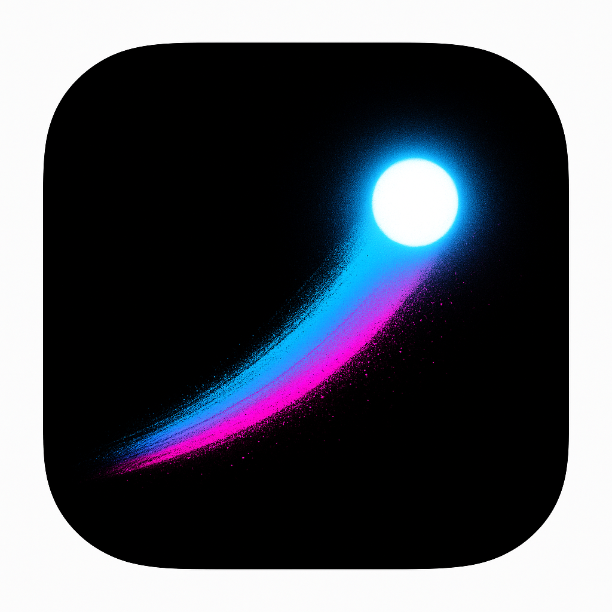
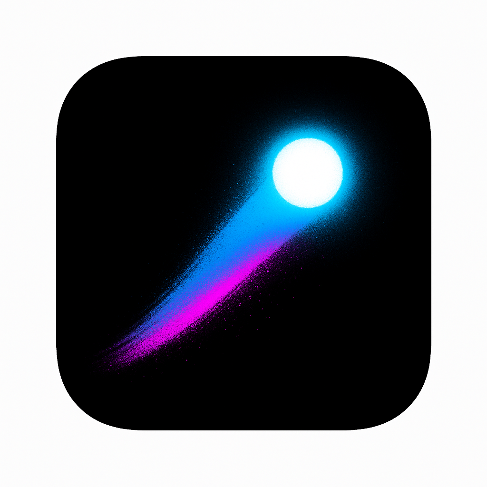

Mobile app icon, 1024x1024, rounded square. Pure black background. A small glowing white sphere with intense neon blue-cyan aura, positioned slightly above centre. A single sweeping spray-paint trail curves behind it — gradient from electric blue to hot pink, with visible paint scatter and bleed at edges. No text, no other elements. The sphere should look like a comet cutting through darkness. Minimal, bold, street art energy. The trail should have enough visual mass to read at 60px thumbnail size.Mobile app icon, 1024x1024, rounded square. Pure black background. A small glowing white sphere with intense neon blue-cyan aura, positioned slightly above centre. A single sweeping spray-paint trail curves behind it — gradient from electric blue to hot pink, with visible paint scatter and bleed at edges. No text, no other elements. The sphere should look like a comet cutting through darkness. Minimal, bold, street art energy. The trail should have enough visual mass to read at 60px thumbnail size.
{kind=link}
{kind=link}